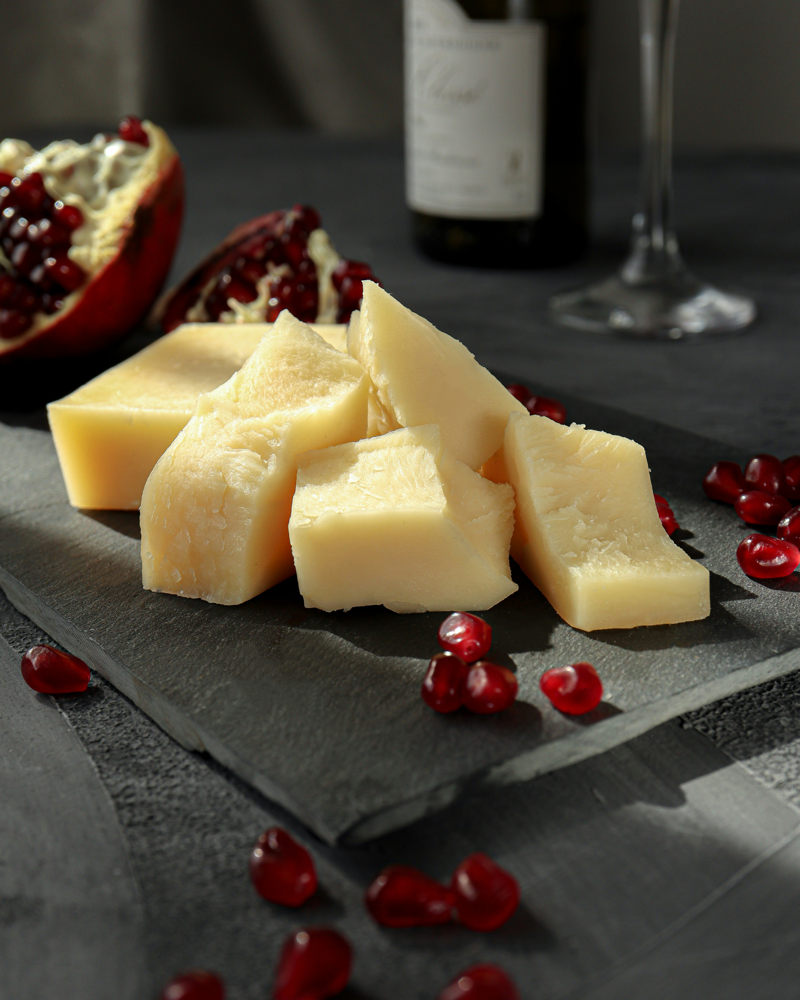

This is a picture of fresh cheese and basil on a cutting board.
The Invention of Cheese
Cheese was (most likely) discovered around 8,000 to 10,000 years ago! This was a result of milk curdling inside of animal stomachs (what milk was transported in at the time).
An enzyme in the lining of animal stomachs (called "Rennet") and the warm temperatures that they were stored in caused the cheese to be soft and very salty, similar to feta or cottage cheese.
The Evolution of Cheesemaking

Cheesemaking has evolved a lot over the years, going from an accidental process thousands of years ago, to what we have today.
In the middle ages, European monastic communities developed many variaties still eaten today and the industrial revoltuion started to automate cheesemaking, which increased consistency and efficiency.
Now, Modern machines and technologies are used to create cheese all over the world, even the variaties invented lng, long ago.